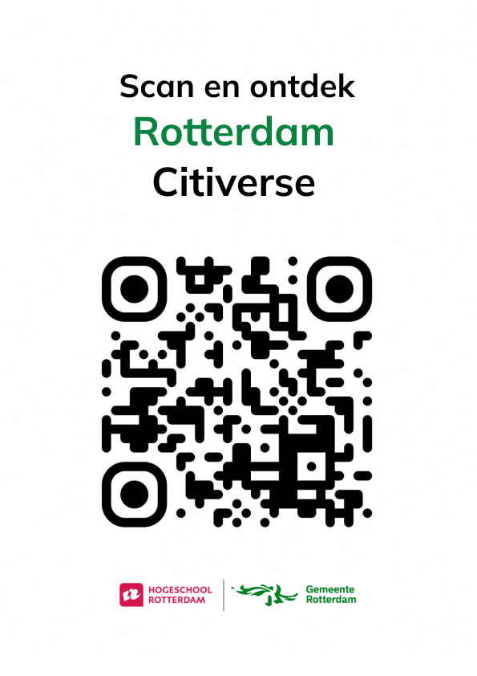
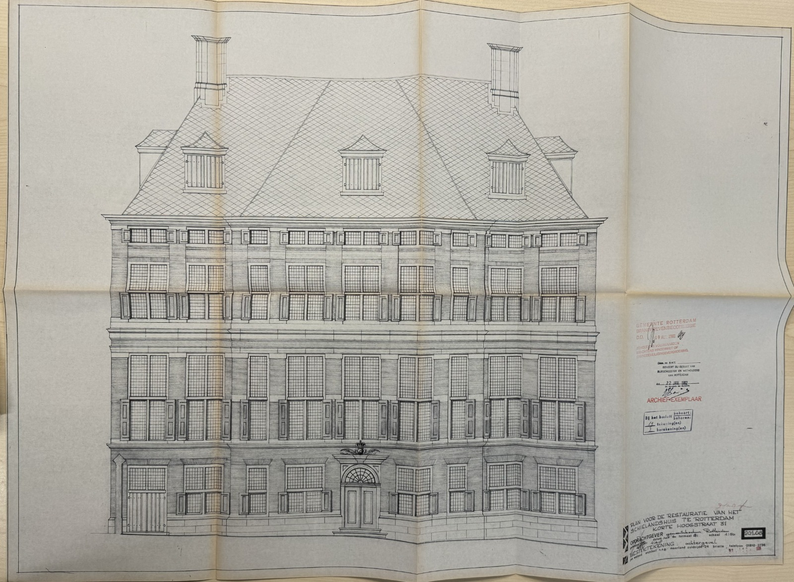
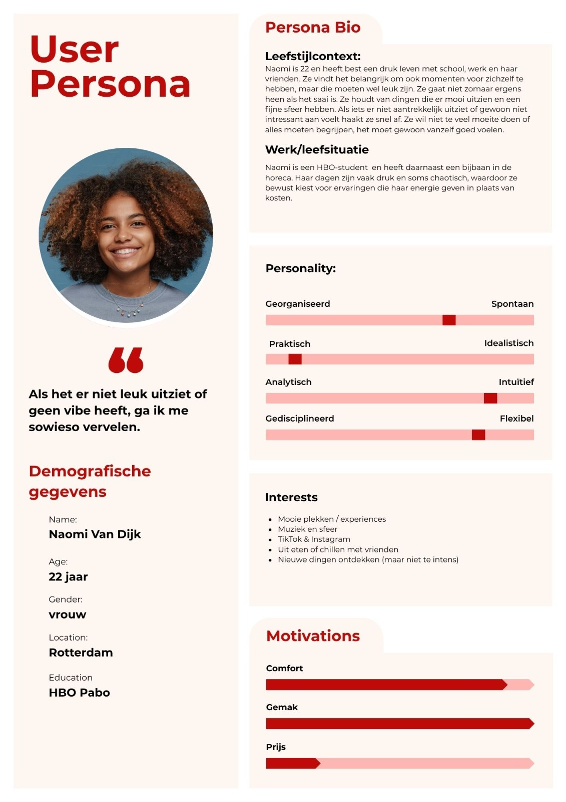
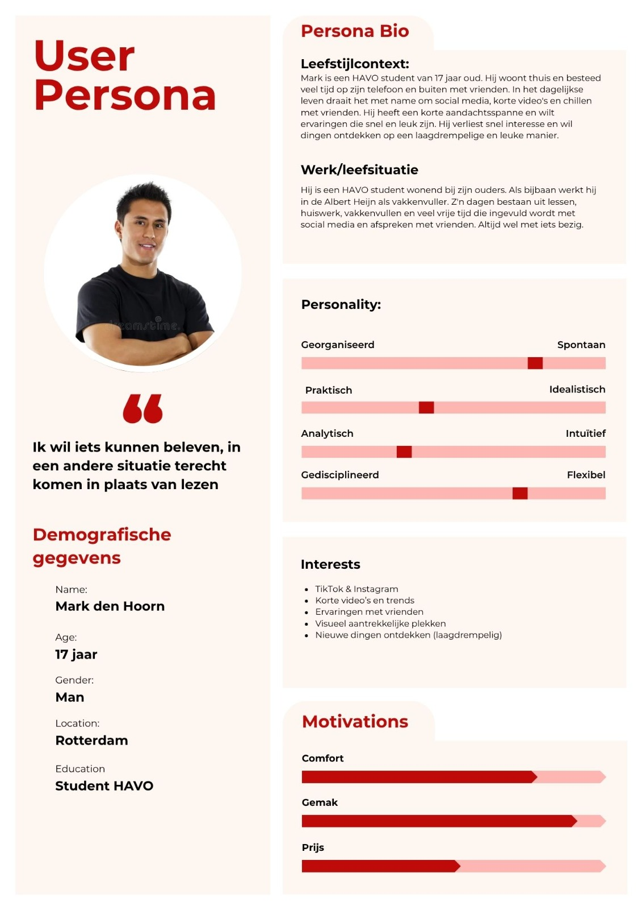
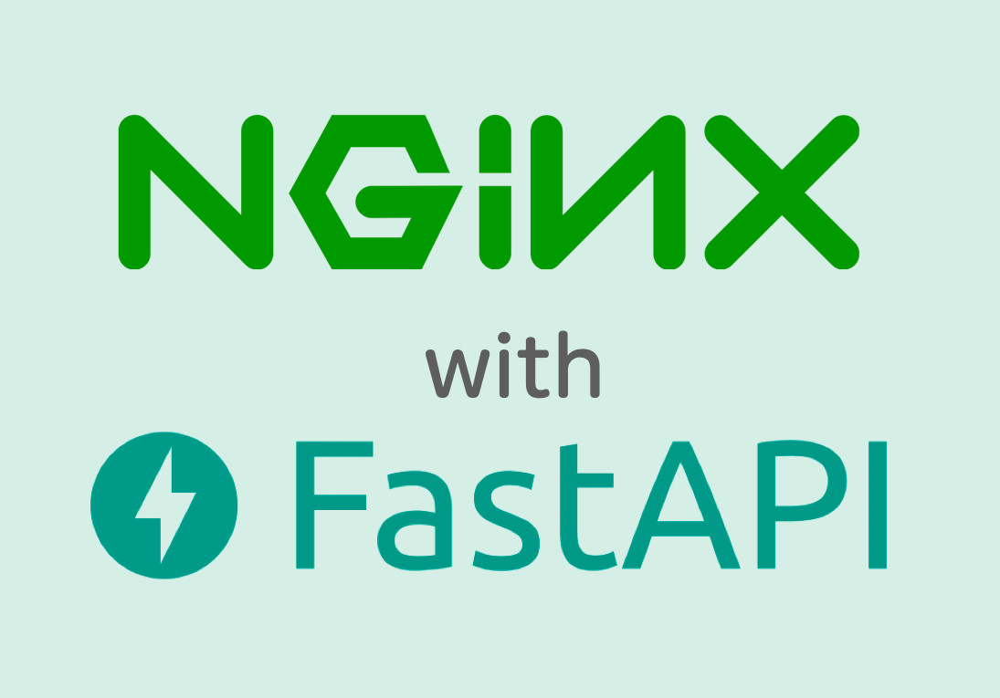
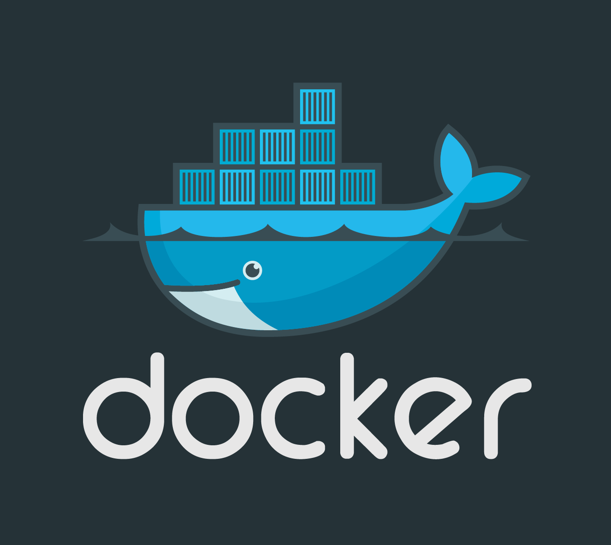
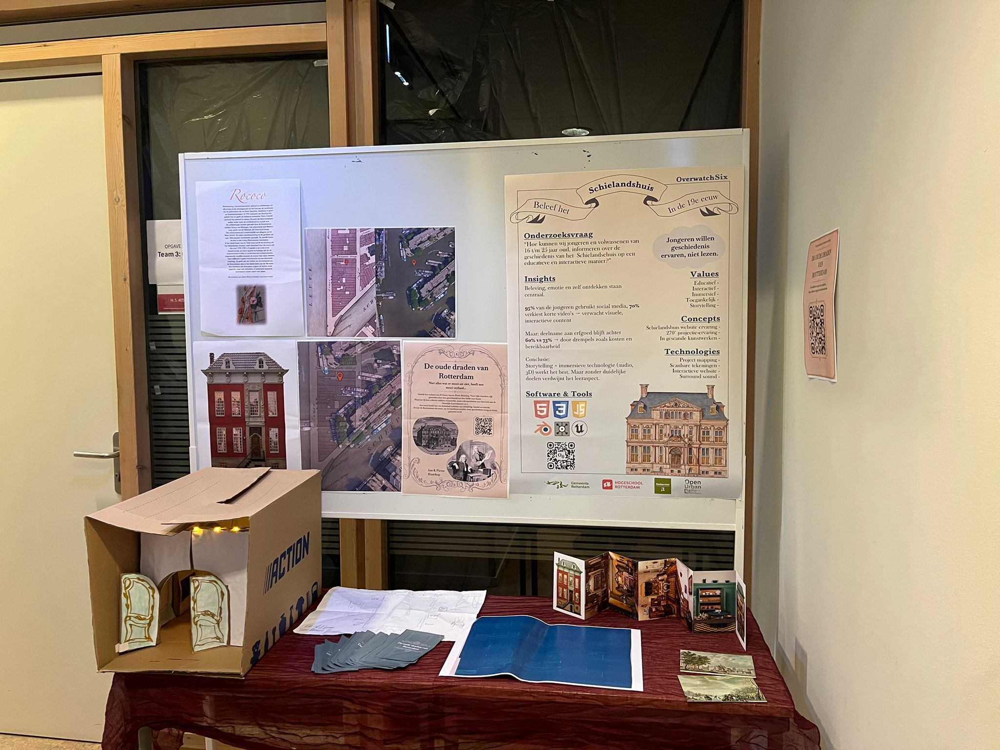
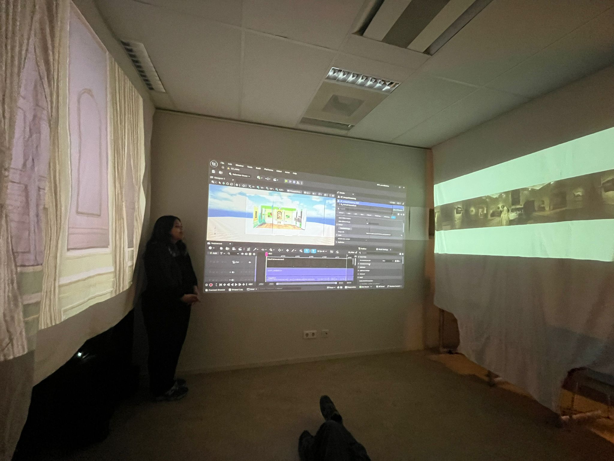
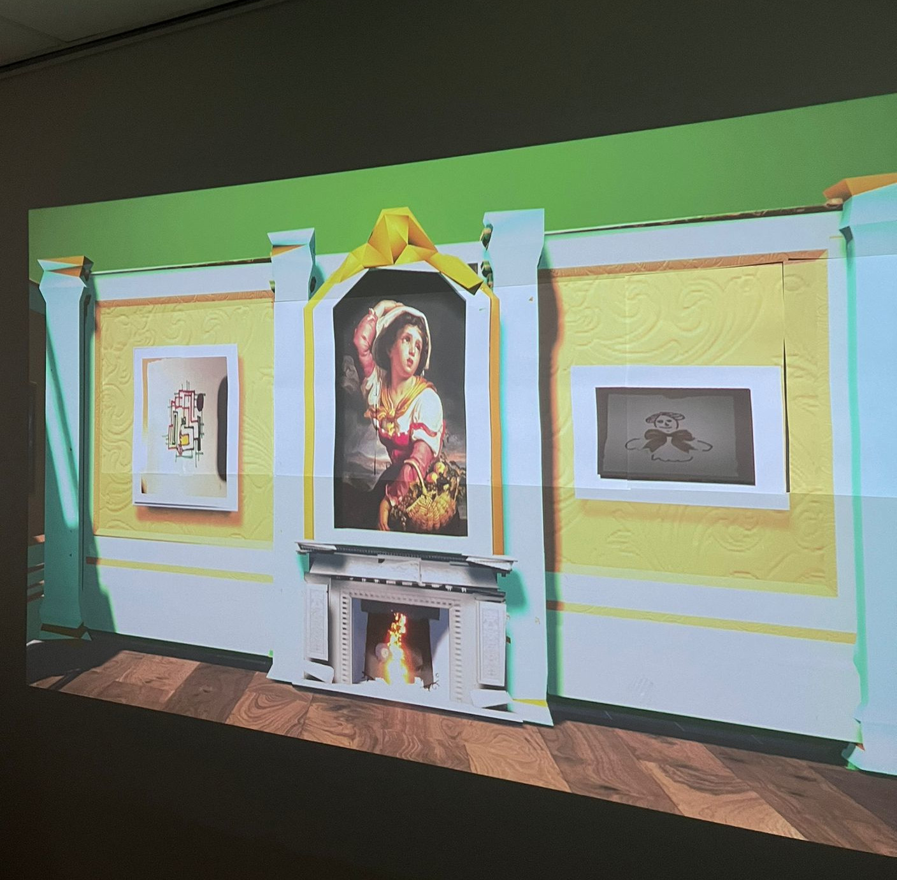
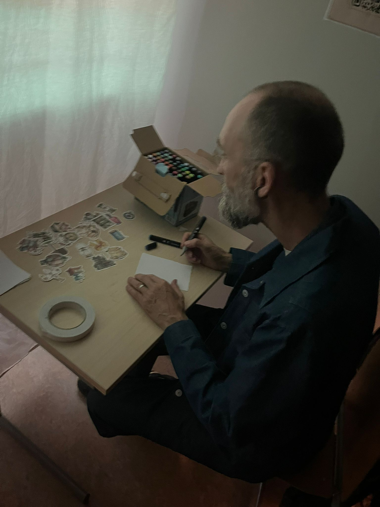

Ontwerpvraag
"Hoe kunnen wij jongeren en volwassen van 16 t/m 25 jaar oud, informeren over Rotterdamse geschiedenis over de 18e eeuw doormiddel van een immersieve en toegankelijke museum ervaring met gebruik van storytelling."
Huidige situatie
Binnen de Gemeente Rotterdam bestaan verschillende initiatieven om het stedelijke en historische data toegankelijk te maken zoals het Stadsarchief, het Open Urban Platform en het Citiverse-project. Er is een sterke technoligsche basis om data te ontsluiten en te gebruiken.
De grootste uitdaging ligt echter in structurele samenwerking tussen afdelingen en het duurzaam doorontwikkelen van producten, zodat kennis en investeringen behouden blijven.
Daarnaast wordt de doelgroep jongeren(16-25 jaar) momenteel nog beperkt bereikt, terwijl zij juist interesse hebben in interactieve en digitale ervaringen.
Gewenste situatie
In de gewenste situatie maken jongeren en jongvolwassenen (16-25 jaar) op een educatieve en interactieve manier kennis met de geschiedenis en toekomst van Rotterdam.
Het product biedt een leuke en leerzame ervaring waarbij gebruikers actief met stedelijke data werken. Tegelijkertijd wordt nieuwe interactiedata verzameld die kan worden gebruikt voor vervolgonderzoek en verdere ontwikkeling.
Het doel is bereikt wanneer binnen een bepaalde periode een duidelijke groep uit de doelgroep het product gebruikt en aangeeft dat zij nieuwe kennis hebben opgedaan.
Proces
Sprint doel
Onze sprint doel voor sprint 0, was om meer kennis te krijgen hoe wij samen konden gaan werken met onze interdisciplinaire skills. Maar ook te leren samen werken in de sprints, wij hebben allemaal verschillende werkwijze dus dit was een oefening om te zien hoe wij elkaar konden aansturen en helpen tijdens ons werkproces.
We hoopte dus na deze sprint meer duidelijkheid te hebben hoe we te werk kunnen gaan, maar ook wat elkaars skills waren en hoe die ingezet kunnen gaan worden voor ons project.
Hackaton
Tijdens de heckaton hebben wij alle sprints in 1 dag doornomen om in een korte tijd een start eindproduct te maken. We hebben dit gedaan om kennis te krijgen over hoe het werken in sprints werken en hoe wij daarin samen kunnen werken alse interdisciplinair team.
Zo hebben we alle sprints doorgenomen met als na loop dat wij een rapid prototype zullen neer zetten die wij aan andere teams kunnen presenteren.
Omdat dit een van de eerste weken waren hadden wij geen verdiepend onderzoek kunnen doen, waardoor wij z.s.m. met een tijdelijk prototype moesten komen. Hiervoor kwamen wij op het idee om QR-codes door de stad op te hangen waar voorbijgangers meer te weten konden komen over de geschiedenis van Rotterdam. Zij konden dan ook de AR modes gebruiken om met hen camera de geschiedenis te beleven alsof zij er daadwerkelijk waren op een laagdrempelige manier.
Om te testen of er echt interesse is in de geschiedenis van Rotterdam en of mensen daadwerkelijk een QR-code zullen scannen hebben wij een prototype test uitgevoerd. Zo hebben wij door de school QR-codes opgehangen met de hoop dat mensen in het gebouwd deze zullen scannen. Aan deze QR-code was een korte enquête gekoppeld waar de respondent kon vertellen waar zijn interesses in lagen en of zij dit daadwerkelijk zouden gebruiken.
We hebben hierop hebben wij 10 reacties gekregen, door dit hadden wij al snel door dat personen minder snel een QR-code zullen scannen waar vooraf geen info over wordt gegeven. Wel hebben de respondenten die gereageerd hebben laten weten dat zij geïnterneerd zijn in de geschiedenis van Rotterdam. Wij hebben deze ontdekking dus ook gebruikt als werklijn voor de aankomende sprints.

Eerste concept na Hackaton
In-scope
- Doelgroeponderzoek onder jongeren en volwassenen
- Analyse van archief- en stedelijke data
- Conceptontwikkeling van een interactieve ervaring
- Prototype ontwerp en gebruikerstesten
- Feedback verzamelen van burgers en stakeholders
- Documenteren van het ontwikkelproces
Out-of-scope
- Volledig technisch eindproduct
- Internationale uitrol of commercieel model
- Complexe systeemintegraties
- Langetermijnonderhoud na oplevering
- Complete inclusiviteit voor doelgroep
Constraints
- Projectduur van 10 weken / 5 sprints
- Beperkte middelen binnen een studentenproject
- Beschikbaarheid en kwaliteit van data
- AVG en privacywetgeving
- Technische haalbaarheid
Onderzoek & Feedback
- Gebruikersinterviews & enquêtes
- Inzicht in wensen en voorkeuren
Prototypeontwikkeling
- Eerste interactieve versie bouwen
- VR/AR elementen intigreren
Testen & Documenteren
- Prototype testen met oelgroep
- Feedback en resultaten vastleggen
Sprint doel
Ons doel voor sprint 1 was om verdiepend onderzoek op te doen zodat wij onze ideeën voor het concept beter konden vormgeven en onderbouwen. Omdat dit een van de eerste sprints waren hadden wij nog weinig idee waar wij ons op wouden gaan focussen, wij hoopte dus na deze sprint meer duidelijkheid te brengen over het onderwerp wij ons op willen gaan richten.
Aan het einde van deze sprint hopen wij dus een duidelijk beeld te hebben over waar we naar toe willen gaan werken. Zodat wij onze tijd goed kunnen inzetten voor het ontwikkelen van prototypes en het kunnen testen bij de doelgroep.
Deskresearch inzichten
Interesse in geschiedenis
Jongeren (16–30) tonen interesse in lokale geschiedenis,
vooral wanneer deze visueel en interactief wordt aangeboden.
Belangrijke barrières zijn kosten en bereikbaarheid.
Wat werkt voor historische beleving?
VR/AR maakt geschiedenis ervaarbaar.
Storytelling en gamification verhogen betrokkenheid.
Jongeren willen actief deelnemen en invloed hebben.
Motivatie (Self Determination Theory)
Zowel intrinsieke als extrinsieke motivatie spelen een rol.
Belangrijk zijn autonomie, competentie en verbondenheid.
Multiculturele context
Rotterdam behoort tot de meest diverse steden met meer dan 170 nationaliteiten.
Dit vraagt om een inclusieve en toegankelijke benadering.
Tool Research
Blender & Three.js
In deze fase hebben we onderzoek gedaan naar verschillende tools die ons konden helpen ons concept tot leven te brengen. We hebben de 3D-tools zoals Blender en Three.js onderzocht. Hierbij lag de focus op het maken en weergeven van interactieve 3D-omgevingen.
We hebben verkend hoe deze tools kunnen bijdragen aan het visualiseren van historische data en het creëren van een immersieve ervaring.
Godot
Godot is onderzocht als mogelijke game engine voor het ontwikkelen van een interactieve en immersieve ervaring.
De focus lag op gebruiksvriendelijkheid, flexibiliteit en de mogelijkheden voor het bouwen van prototypes binnen korte tijd. Daarnaast hebben we ook onderzocht of deze tool geschikt zou zijn voor het integreren van AR/VR-elementen in latere fases van het project. En of het mogelijk was de Cesium 3D-visualisatie hierin te integreren. Dit is helaas niet gelukt omdat Godot geen goede ondersteuning biedt voor Cesium, wat nodig is voor het concept in sprint 1. Hierdoor hebben we besloten om Godot niet verder te gebruiken in ons project en ons te richten op andere tools die wel compatibel zijn met onze behoeften.
NLP Forumlier
Er is verkend hoe NLP (Natural Language Processing) ingezet kan worden voor een feedback forum binnen het project.
Hierbij kijken we naar manieren om gebruikersinput automatisch te analyseren en waardevolle inzichten te halen uit feedback.
De inzichten uit onderzoek en experimenten zijn vertaald naar concrete verbeteringen van het concept.
Daarnaast is er een duidelijke technische richting gekozen voor de verdere ontwikkeling.
Fieldresearch
- Gebruikersinterviews & enquêtes
- Musea en locaties bezoeken
- Inzicht in wensen en voorkeuren verdiepen
Prototypeontwikkeling
- Concept verder concretiseren
- Eerste interactieve versie bouwen
- Verdiepen in Blender en Three.js
Testen & Documenteren
- Prototype testen met doelgroep
- Feedback verzamelen en analyseren
- Resultaten documenteren
Sprint doel
In sprint 2 hebben we het concept verder aangescherpt en vertaald naar zowel onderzoek als een eerste werkend prototype.
De focus lag op het valideren van aannames via fieldresearch en het ontwikkelen van een interactieve ervaring gebaseerd op deze inzichten.
Fieldresearch
Tijdens deze sprint hebben we actief fieldresearch uitgevoerd om beter inzicht te krijgen in zowel de inhoud als de doelgroep.
- Bezoek aan het Stadsarchief: Hier hebben we onderzoek gedaan naar historische content en inspiratie opgedaan voor het verhaal en de context van het product.
- Interviews en enquêtes: We hebben gebruikers bevraagd om aannames te testen en inzicht te krijgen in hun interesses, gedrag en voorkeuren.
Deze inzichten vormden de basis voor de keuzes die zijn gemaakt in het prototype.

Bouwtekeningen van Schielandshuis
Prototype
Op basis van de inzichten uit het onderzoek hebben we een eerste interactief prototype ontwikkeld in Minecraft.
In dit prototype hebben we een vereenvoudigde versie van het Schielandshuis nagebouwd. Binnen deze omgeving hebben we spelelementen toegevoegd zoals quests en NPC’s om de gebruiker actief door de ervaring te begeleiden.
- Reconstructie van het Schielandshuis in Minecraft
- Toevoegen van quests (opdrachten)
- NPC’s die informatie en interactie bieden
- Verkennen van storytelling binnen een game-omgeving

Eerste prototype van het Schielandshuis in Minecraft
Onderzoek & Validatie
- Extra feedback verzamelen op prototype
- Inzichten verder verdiepen
Prototypeontwikkeling
- Minecraft prototype uitbreiden
- Gameplay en interactie verbeteren
Testen & Itereren
- Gebruikerstesten uitvoeren
- Iteraties doorvoeren op basis van feedback
Sprint doel
In deze sprint lag de focus op het onderzoeken van de doelgroep en het valideren van het Minecraft-prototype. We hebben eerst fieldresearch gedaan om de belangrijkste pijnpunten en gebruikerswensen te achterhalen, waarna we twee representatieve persona's hebben opgesteld om de inzichten te vertalen naar een concrete doelgroep. Tegelijkertijd is er een gericht onderzoeksplan opgesteld en getest met de doelgroep om te zien hoe zij reageren op de spelmatige presentatie van de Schielandshuis-historie. Het doel was om zowel de inhoudelijke onderbouwing als de praktische uitvoering van het prototype te versterken en alles overzichtelijk vast te leggen in één duidelijk document.
User Personas

User persona 1

User persona 2
- Persona 1: Vrouw (22 jaar)
Voor haar is het belangrijk dat de interface er interessant en visueel aantrekkelijk uitziet om haar aandacht erbij te houden. - Persona 2: Jongen (17 jaar)
Een actieve doener die behoefte heeft aan interactiviteit. Hij wil dingen kunnen ondernemen in plaats van alleen maar tekst te lezen.
Onderzoeksplan Minecraft Prototype
Hoofddoel: Vaststellen wat het doel is van het prototype, wat we eruit hopen te krijgen en hoe de doelgroep reageert op de gamification van de geschiedenis van het Schielandshuis.
Belangrijkste onderzoeksvragen
- Begrijpen de gebruikers direct wat het prototype inhoudt?
- Hoe ervaren gebruikers de locatie waar het zich plaatsvindt? Snappen ze dat dit het Schielandshuis is?
- Op welke momenten komen gebruikers vast te zitten?
- Waar haken gebruikers af of verliezen ze interesse?
- In hoeverre dragen de personages bij aan het begrijpen van de geschiedenis?
- Hoe ervaren gebruikers de balans tussen spelen en leren?
- In hoeverre onthouden gebruikers feitjes rondom de geschiedenis van het Schielandshuis?
- In hoeverre helpt de interactieve ervaring bij het beter begrijpen van de geschiedenis vergeleken met tekst?
- Hoe duidelijk zijn de opdrachten en aanwijzingen voor de gebruiker?
- Zouden gebruikers dit concept ook in het echt, op locatie, willen ervaren?
- Wat vinden gebruikers positief aan de ervaring?
- In hoeverre kunnen gebruikers met lage taalvaardigheid de opdrachten begrijpen zonder extra uitleg?
- In hoeverre helpen visuele en interactieve elementen bij het begrijpen van de opdrachten en het verhaal?
Testresultaten & Conclusie
Voor onze eerste testronde ontwikkelden wij een Minecraft escape room prototype. Hiermee onderzochten wij of jongeren op een interactieve manier meer konden leren over de geschiedenis van het Schielandshuis. Uit de test kwam naar voren dat gebruikers de interactieve opzet leuk vonden, maar dat de historische inhoud nog niet sterk genoeg werd overgebracht.
Een belangrijk inzicht was dat de gameplay soms afleidde van het leren. Gebruikers waren vooral bezig met het zoeken naar items, het openen van chests en het voltooien van trades. Hierdoor onthielden zij vooral losse details, zoals Napoleon, water, dijken of taart, maar niet het volledige historische verhaal.
Daarnaast werkte tekst als belangrijkste informatiebron niet goed genoeg. Veel gebruikers lazen de boeken vooral om te achterhalen welk item zij nodig hadden, niet om de geschiedenis echt te begrijpen. Ook waren het doel en de regels aan het begin niet voor iedereen duidelijk, waardoor sommige testpersonen begeleiding nodig hadden of onderdelen van het gebouw misten. Als laatst was de lettertype in Minecraft slecht leesbaar en niet toegankelijk genoeg voor onze doelgroep.
Wel bleek dat interactie, progressie en beloning motiverend werkten. Wanneer gebruikers een trade voltooiden, kregen zij meer motivatie om door te gaan. Dit liet zien dat deelname waardevol is, zolang de interactie duidelijk verbonden is aan de inhoud.
Deze inzichten hebben geleid tot een nieuwe ontwerprichting. In plaats van een game waarin de gebruiker vooral opdrachten uitvoert, richten wij ons nu op een immersieve museumervaring waarin storytelling, projectie, audio en creatieve participatie centraal staan. De bezoeker moet de geschiedenis niet spelen, maar vooral beleven en beter begrijpen.
Sprint doel
In deze sprint hebben we kritisch gekeken naar onze eerdere concepten en een belangrijke ontwerpkeuze gemaakt door een van onze ideeën los te laten (kill your darling). Op basis van de onderzoeksresultaten hebben we besloten om verder te gaan met een immersieve ervaring als hoofdconcept van het project. Het doel van deze sprint was om dit concept verder uit te werken, te onderzoeken hoe bezoekers kunnen worden meegenomen in de ervaring en te verkennen hoe interactieve elementen en digitale technologieën hieraan kunnen bijdragen.
Kill Your Darling
Tijdens de kill your darling hebben wij besloten om weg te stappen van het gamification onderdeel in ons concept. Wij willen namelijk een toegankelijk product neerzetten die educatie aan bied door gevoel. Omdat ons vorige concept deze doelen niet kon behalen hebben wij ervoor gekozen om ons concept aan te passen.
Dit hebben wij gedaan door een Kill your darling in te zetten, met behulp van een crazy 8 om nieuwe ideeën te genereren voor ons concept.
We willen in ons nieuwe concept een immersieve omgeving neerzetten in plaats van een volledig virtueel concept, wat minder toegankelijk zou zijn omdat er altijd een computer voor nodig zou zijn. Terwijl er bij ons nieuwe concept een plek wordt gecreëerd waar iedereen binnen Rotterdam naar toe kan.
Team waarden
Onze nieuwe team waarden na de kill your darling:
- Educatief
- Toegankelijkheid
- Inclusiviteit
- Empathie/beleving
- Nieuwsgierigheid
Ons product moet educatief zijn op een immersieve en interactieve manier, ons product moet een kans zijn om educatie leuker en laagdrempeliger te maken. Waarmee wij de gebruiker een leuke en leerzame ervaring willen geven.
Ons product moet toegankelijk zijn voor iedereen, wij willen dat iedereen gebruik kan maken van ons product. Hier met de focus op mensen die mindervalide zijn, slechter ziend of horend.
Wij willen de geschiedenis vanuit meerdere perspectieven tonen en kritisch denken over representatie. De geschiedenis moet niet verheerlijkt worden.
De bezoeker moet een persoonlijke connectie voelen met de geschiedenis, de kamer en de personen uit het verhaal. Door de gebroeders Bisschop centraal te stellen willen wij meer emotionele betrokkenheid. Door interactie willen wij de gebruikers ook de ervaring geven dat zij in het verhaal zitten.
Ons product moet nieuwsgierigheid opwekken bij de gebruiker doordat wij geschiedenis op een unieke, immersieve en interactieve manier presenteren. Wij willen dat gebruikers na het bezoeken geneigd zijn meer te leren over de geschiedenis van Rotterdam.
Concepten
- Crazy 8-sessie om meerdere ideeën te genereren en snel opties te vergelijken.
- Websiteconcept opgesteld en uitgewerkt met structuur en contentflow.
- Poster ontwikkeld om het project visueel te presenteren aan partners.
- Kijkdoos gemaakt om ons project op een laagdrempelige manier te kunnen testen
- Video voor het telefoonprototype voorbereid om de mobiele ervaring duidelijk te maken.
Onderzoek
- Desk research gedaan naar het Schielandshuis in de 17e-19e eeuw voor feitelijke inhoud.
- Een tijdlijn uitgewerkt om historische gebeurtenissen helder te presenteren.
- Onderzoek naar het inscannen van tekeningen gedaan voor mogelijke interactieve toepassingen.
- Unreal Engine NPC-animatie onderzocht voor het versterken van de digitale ervaring.
- Contact met REMASTERED Rotterdam gelegd om afstemming met partners te waarborgen.
Huis van Bosch
We bezochten op 28 april het museum Huis van Bosch, zodat we een voorbeeld konden zien van hoe een educatieve verhaal immersief verteld wordt aan bezoekers. We begonnen met een uitleg van hoe het proces zal gaan lopen. De medewerkers vertelde ons dat verhaal bij een beginpunt start en we pijlen moesten volgen om naar het volgende punt in het verhaal te komen. Het verhaal ging over Jheronimus Bosch en vooral hoe hij leefde, wat hem bekend maakte en het tijdperk zelf.
Deze ervaring was zeer informatief, omdat we inzichten kregen van hoe wij zelf ons verhaal wilde vertellen vanuit ons concept over Rotterdam met als aangrijpingspunt de broers Bosch. We zagen namelijk voor onszelf ook hoe het is om zo historische verhaal aan te horen. Bijvoorbeeld was de ervaring snel, te langzaam of precies goed. Daarnaast stelden we op het einde vragen over de technieken die ze gebruikte.
Stadsarchief onderzoek
Op 7 mei bezochten wij als groep het stadsarchief, zodat we meer kennis en inzichten konden doen over de geschiedenis van de broers Jan en Pieter Bisschop. Voor dit bezoek kregen we verschillenden documenten en boeken aan ons geleverd die ons meer vertelde over de geschiedenis van Rotterdam die wij over willen brengen aan ons doelgroep. We plande dit bezoek, zodat we een beter begrip hebben over het bouwen van de story en de andere applicatie eromheen. Dit moet namelijk gebaseerd zijn op context de geschiedenis van Rotterdam anders geeft het namelijk geen richting in het concept.
Tally heeft oude documenten onderzocht die bezit waren van de broers Bisschop, hier heeft ze kennis opgedaan over de oud Nederlandse taal, handschrift, aankopen en handel. Veder waren er ook documenten van wanneer Jan en Pieter ter overlijden kwamen en wie hen uitvaart bezocht hebben.
Tobias heeft drie jaarboeken van Rotterdam onderzocht. In een van de boeken is er een artiekel gevonden die specifiek ging over Jan Bisschop. Deze informatie was zeer nuttig, omdat het precies bevatte wat we wilde overbrengen aan de doelgroep.
Tyrese onderzocht een boek van de geschiedenis van 18e eeuw
Pepijn onderzocht een boek van de geschiedenis van Rotterdam in de 17e en 18e eeuw, om meer kennis op te doen over het sfeer gevoel van toen.
Resultaten
- Een concretere projectrichting ontwikkeld met een sterke focus op de website en mobiele presentatie.
- Belangrijke stakeholders zoals gemeente Rotterdam en Museum Rotterdam betrokken in het concept.
- Basisinformatie en visuals verzameld voor de website zodat de inhoud direct verder kan worden uitgewerkt.
- Experimenten met scan en animatie-onderzoek opgeleverd als input voor verdere prototyping.
- Het begin van de scan-app is gemaakt, zodat het concept al getest en verder ontwikkeld kan worden in de latere sprints.
Sprint doel
Ons doel voor de laatste sprint is om de laatste puntjes op de i te kunnen zetten. Zo willen wij door het testen van onze probe inzichten krijgen over hoe wij verder te werk kunnen gaan met het concept, wat er nog aangepast moet worden en hoe wij onze eindexpo tot leven kunnen brengen.
Probe testing
Voor het prototype in sprint 4 heeft Tallysia een kijkdoos gemaakt die de immersieve ervaring kleinschalig nabootst. Met dit prototype willen wij testen met het doel of de testpersonen een immersieve ervaring beleven.
In de kijkdoos hebben wij dan ook twee videobeelden neergezet die gemaakt zijn door Pepijn. Hier zijn beelden te zien van personen die langs lopen en hebben audio geluiden zoals achtergrondgeluiden en muziek. Deze hebben wij getest met klasgenoten en tijdens de smart & social fest.
De testen met klasgenoten hebben wij gedaan door er een storyline audio aan toe te voegen die de omgeving beschrijft en meer over de 18e eeuw verteld. Dit is toen goed bevallen met positief feedback, waardoor wij veder konden gaan met het veder ontwikkelen van ons concept.
Scan Applicatie
Julina heeft een webapplicatie ontwikkeld waarin je een illustratie kan fotograferen en die kan uploaden naar de immersieve ervaring. De webapplicatie is inclusief gemaakt door meerdere talen toe te voegen, duidelijke instructies toe te voegen en simpele UI te gebruiken.
Api server
Tobias heeft een api server opgezet die de foto's ontvangt van de webapplicatie en deze controleert of de afbeeldingen gepast zijn voordat ze worden opgeslagen. Bij een veiligheidscontrole die slaagt, wordt het bestand naar de lokale uploads-folder geschreven. Wordt de afbeelding geweigerd, dan wordt er een duidelijke error response terug gestuurd aan de client. \
De server draait in een Docker-container met FastAPI als backend en Nginx als reverse proxy voor het behandelen van inkomende requests. Voor de contentanalyse wordt een trainend AI-model gebruikt dat elke upload checked. Het systeem bewaart een maximaal aantal recente afbeeldingen en verwijdert oudere bestanden automatisch om schijfruimte te besparen.
Voor communicatie staan meerdere endpoints beschikbaar: een gezondheidscheck (/health), de upload-route (/app/upload), en verschillende fetch-opties om bestanden te bekijken (/fetch, /fetchi/{id}, /fetch_all). Interactieve documentatie is beschikbaar via /docs.
Voor toegang buiten het lokale netwerk wordt Tailscale gebruikt, wat een versleuteld prive netwerk biedt zonder dat openbare poorten nodig zijn of een publiek IP-adres wordt blootgesteld.

Fast API met Nginx

Docker
Unreal engine
Tyrese heeft in Unreal-Engine de digitale immersieve ervaring opgezet met de 3d modellen van blender. Daarnaast zijn er sfeer geluiden toegevoegd en bewegende partikels om vuur na te bootsen. Op de muren zijn blanke canvassen gehangen die worden gevuld als er een foto vanaf de webapplicatie wordt gestuurd, opgehaald worden via de api-server en dan worden weergegeven in Unreal engine.
Met behulp van Sequencer (LS_intro) is een automatische ervaring gemaakt waarbij de camera een scene van de kamer maakt. De ervaring speelt automatisch af en blijft continu herhalen, zodat deze geschikt is voor een museumopstelling.
Blender
In blender zijn er 3d modellen gemaakt door Abigail en Pepijn van de muren van de kamer in de Leuvenhaven. Deze zijn geëxporteerd naar Unreal Engine om te gebruiken in de omgeving voor Tyrese zijn onderdeel. De modellen zijn verder aangepast door:
- Schaal en positie correct te zetten
- Materialen te controleren
- Belichting toe te voegen
- De omgeving compleet op te bouwen
Door deze combinatie van elementen hebben we een digitale omgeving ontwikkeld waarin geschiedenis op een interactieve manier wordt ervaren. Met behulp van 3D-modellen, camerabewegingen, geluidseffecten en bezoekersinteractie wordt de kamer van de Leuvehaven opnieuw tot leven gebracht.
Interview
Rob van noordhoek museum Rotterdam door Pepijn en Tally
Expositie
Voor de expo heeft ons team gebruik gemaakt van een combinatie van fysieke en digitale elementen om een immersieve museum ervaring te creëren. Door gebruikt te maken van drie projectoren, witte lakens, JBL box, laptops en een interactieve tekentafel ontstond een ruimte waarin bezoekers de geschiedenis op ee nieuwe manier konden beleven.
Proces
Wanneer bezoekers de ruimt binnenstapten, werden zij omring door drie geprojecteerde muren van de historische kamer. De Unreal Engine omgeving vormde het centrale onderdeel van de ervaring, terwijl de andere projecties de kamer uitbreiden. Hierdoor ontstond het gevoel dat de bezoekers daadwerkelijk door de stijlkamer van de Leuvehaven liepen.
Tijdens de ervaring werden bezoekers meegenomen in het verhaal van de gebroeders Bisschop. Door de combinatie van sfeergeluiden, visuele projecties en de voice-over werd het historische verhaal op een interactieve manier verteld.
Eigen kunst toevoegen
Aan het einde van de ervaring werden de bezoekers uitgenodigd om zelf onderdeel te worden van de collectie. Zij konden een eigen tekening maken die via onze applicatie werd gescand en beoordeeld. Vervolgens werd de tekening digitaal toegevoegd aan de Unreal Engine omgeving en tentoongesteld op de muur.
Daarnaast kregen bezoekers hun fysieke tekening mee naar huis in een envelop met een officiële zegel als herinnering aan hun bijdrage.
Samenvatting
Door fysieke en digitale onderdelen te combineren hebben we een interactieve museumervaring ontwikkeld waarin bezoekers niet alleen naar geschiedenis kijken, maar er zelf onderdeel van worden. De combinatie van projecties, Unreal Engine, geluid en bezoekersinteractie bracht de stijlkamer van de Leuvehaven opnieuw tot leven.
Ons concept
Het uiteindelijke concept is uitgegroeid tot een immersieve ervaring waarin bezoekers worden meegenomen naar de 18e eeuw. Tijdens deze ervaring stap je letterlijk een ruimte binnen waarin een digitale representatie van een historische kamer te zien is. Deze kamer is gebaseerd op een woning aan de Leuvenhaven die ooit toebehoorde aan de gebroeders Jan en Pieter Bisschop. Om deze ruimte zo authentiek mogelijk weer te geven, hebben wij de kamer handmatig gedigitaliseerd en opnieuw opgebouwd in een digitale omgeving.
Het doel van de ervaring is om bezoekers niet alleen informatie te laten ontvangen, maar hen echt het gevoel te geven dat zij zich in de 18e eeuw bevinden. Door middel van de omgeving, de sfeer en de verhalen die worden verteld, proberen wij bezoekers onder te dompelen in het leven van die tijd. Gedurende de ervaring maken bezoekers kennis met het verhaal van de gebroeders Jan en Pieter Bisschop en ontdekken zij meer over hun geschiedenis en de rol die zij speelden binnen Rotterdam.
Nadat bezoekers meer hebben geleerd over het verhaal van de gebroeders Jan en Pieter Bisschop, krijgen zij de mogelijkheid om zelf een tekening te maken. Met deze activiteit willen wij bezoekers niet alleen laten kijken naar de kunst en geschiedenis van de broers, maar hen ook actief onderdeel laten worden van de ervaring. De gemaakte tekening wordt vervolgens ingescand via een webapplicatie en omgezet naar een digitaal schilderij dat in de historische kamer wordt opgehangen. Op deze manier kunnen bezoekers symbolisch deel uitmaken van de schilderijencollectie van de gebroeders Jan en Pieter Bisschop. Hierdoor ontstaat een verbinding tussen het verleden en het heden, waarbij bezoekers hun eigen creatieve bijdrage toevoegen aan de ruimte en zich meer betrokken voelen bij het verhaal.


1

Partners


Meet the team

Tobias Zelders | 24 jaar
INF
"We listen and we don't judge"
0981403@hr.nl

Julina Mercera | 22 jaar
INF
"Worry less, live more"
1055662@hr.nl

Abigail Toekimin | 22 jaar
CMGT
"Failure is acceptable - giving up is not!"
1086967@hr.nl

Pepijn Groeneweg | 21 jaar
CMD
“Be as you wish to seem”
1079060@hr.nl

Tallysia Kromohardjo | 22 jaar
CMD
“Design with passion”
1077776@hr.nl

Tyrese Goedhart | 21 jaar
ADSAI
"Respect is earned, not given"
1079191@hr.nl
Teamwaarden
Ons product moet educatief zijn op een immersieve en interactieve manier, ons product moet een kans zijn om educatie leuker en laagdrempeliger te maken. Waarmee wij de gebruiker een leuke en leerzame ervaring willen geven.
=======We willen een origineel product ontwikkelen met behulp van nieuwe technieken en geven daarbij ruimte aan vernieuwende oplossingen.
>>>>>>> Stashed changesOns product moet toegankelijk zijn voor iedereen, wij willen dat iedereen gebruik kan maken van ons product. Hier met de focus op mensen die mindervalide zijn, slechter ziend of horend.
Wij willen de geschiedenis vanuit meerdere perspectieven tonen en kritisch denken over representatie. De geschiedenis moet niet verheerlijkt worden.
=======Wij willen een product creëren die met plezier gebruikt kan worden. Interactieve componenten die info geven op een leuke manier en zonder te veel zorgen.
We willen door interactieve VR en game omgevingen te gebruiken nieuwsgierigheid stimuleren en zo diepere betrokkenheid bij stedelijke ontwikkeling creëren.
We willen een product dat deels inclusief is door rekening te houden met bijvoorbeeld taal, leeftijd, cultuur of gender.
>>>>>>> Stashed changesDe bezoeker moet een persoonlijke connectie voelen met de geschiedenis, de kamer en de personen uit het verhaal. Door de gebroeders Bisschop centraal te stellen willen wij meer emotionele betrokkenheid. Door interactie willen wij de gebruikers ook de ervaring geven dat zij in het verhaal zitten.
Ons product moet nieuwsgierigheid opwekken bij de gebruiker doordat wij geschiedenis op een unieke, immersieve en interactieve manier presenteren. Wij willen dat gebruikers na het bezoeken geneigd zijn meer te leren over de geschiedenis van Rotterdam.
Samenwerking
Binnen ons team vinden we het belangrijk dat iedereen zich gehoord voelt en weet waar hij of zij aan toe is. Daarom communiceren we regelmatig en maken we duidelijke afspraken. We werken met een heldere taakverdeling, maar helpen elkaar wanneer dat nodig is. Ideeën maken we vaak visueel met schetsen, voorbeelden of prototypes om misverstanden te voorkomen. Tijdens overlegmomenten delen we onze voortgang, bespreken we uitdagingen en geven we elkaar op een respectvolle manier feedback.